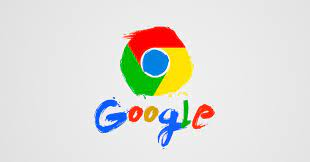
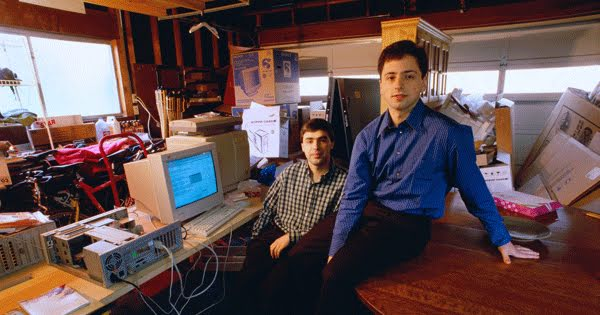

La historia de Google comienza en 1995, en la Universidad de Stanford.
Larry Page se estaba planteando estudiar en Stanford y Sergey Brin, que ya
estudiaba allí, fue el encargado de mostrarle el campus. ... Este motor de
búsqueda se llamó Backrub. Poco después, Backrub pasó a llamarse Google
(¡menos mal!)
Incluso al principio, las cosas no eran del todo convencionales: el primer servidor de Google estaba construido con piezas de Lego y el primer "Doodle" (1998) tenía en su logotipo un muñeco de palitos que anunciaba a los visitantes del sitio web que todo el equipo estaba haciendo pellas en el festival Burning Man. Los eslóganes "Don't be evil" ("Sé buena persona") y "Ten things we know to be true" ("Diez cosas que sabemos que son ciertas") han captado la esencia de nuestros métodos poco convencionales. En los años siguientes, Google creció rápidamente: la empresa contrató ingenieros, creó un equipo de ventas y presentó al primer perro de la empresa, Yoshka. A Google se le quedó pequeña la oficina del garaje y se trasladó a su actual sede (también conocida como "el Googleplex"), situada en Mountain View, California. Nuestro espíritu por hacer las cosas de forma diferente fue lo que impulsó el cambio. Y también lo hizo Yoshka.
 RegresarLa incesante búsqueda de mejores respuestas sigue siendo la base de todo lo que hacemos. Actualmente, Google cuenta con más de 60.000 empleados en 50 países y desarrolla cientos de productos que utilizan miles de millones de personas en todo el mundo, como YouTube, Android, Gmail o, por supuesto, la Búsqueda de Google. Aunque nos hayamos deshecho de los servidores de Lego y hayamos añadido unos cuantos perros más a la empresa, nuestra pasión por crear tecnología para todos sigue presente, desde la época en la que trabajábamos en nuestros dormitorios y en aquel garaje hasta el día de hoy.
RegresarHoy en día, Google forma parte del conglomerado de empresas Alphabet, dirigido por el mismo Larry Page. La compañía tiene más de 60.000 empleados y tiene oficinas en 50 países. Además del motor de búsqueda, Google también gestiona otras plataformas y aplicaciones como Google Docs, Sheets y Slides, Google Calendar, Google Drive, Google Translate, Google Maps, Google Earth, Blogger, YouTube y muchas otras
Además, Google desarrolla los sistemas operativos de Android, el navegador Chrome, aplicaciones y redes sociales propias, y fabrica dispositivos como los smartphone Google Pixel. Pero su enorme tamaño y su dominio de muchos de los servicios de internet también han generado polémica y muchas críticas. La compañía ha sido acusada de manipular los resultados de las búsquedas, censurar páginas, saltarse leyes de privacidad y evadir impuestos, poniendo en cuestión su legendario lema: Don’t be evil [No seas malo].
 RegresarComo no podría ser de otra forma en una empresa que ya es historia viva de la alta tecnología ligada a internet, el origen de la palabra Google es matemático. El término Google proviene de la palabra “Googol” (se pronuncia 'gúgol'), creada por el matemático norteamericano Edward Kasner y cuyo significado es diez elevado a cien. O dicho de un modo más profano: un uno seguido de cien ceros. Etimológicamente, Google sería un número gigante que representa una cantidad de información, aparentemente infinita. De hecho, no existe ningún elemento del universo en una cantidad tan grande como un "Googol": ni estrellas, ni partículas de polvo, ni siquiera átomos. Profundizando más en esta historia sobre el origen de Google como vocablo, al parecer, tal como recogen diversas fuentes, fue el sobrino del matemático Kasner, Milton Sirotta, quien se inventó esta palabra con tan solo 9 años, al ser preguntando por su tío sobre qué nombre le pondría a un gran número. Y este es todo el misterio alrededor de tan singular palabra. En realidad es un nombre muy bien elegido, pues representa estupendamente la misión y la filosofía de la compañía, puesto que la razón de ser Google no es otra que organizar una gran cantidad de información, aparentemente infinita, y hacerla accesible y útil para todos.